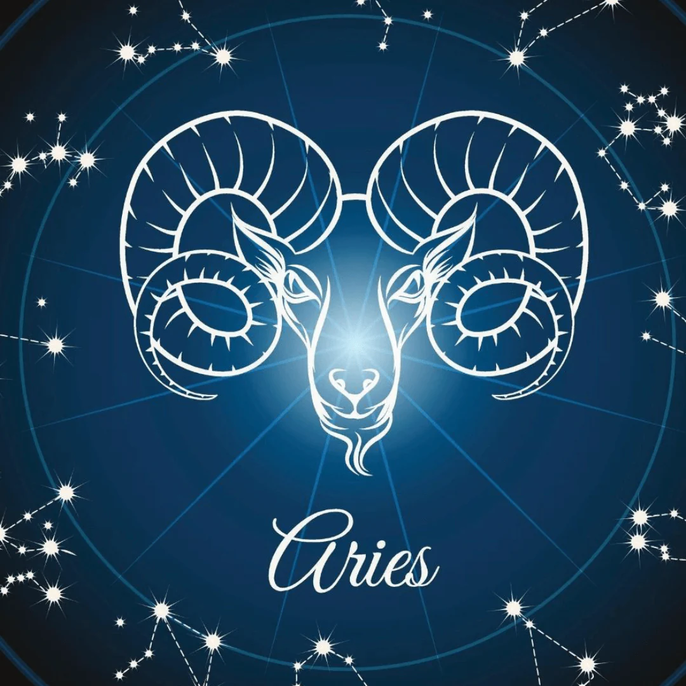

En la astrología occidental, los signos zodiacales o signos astrológicos, son los doce sectores de treinta grados de la eclíptica desde el equinoccio vernal, una de las intersecciones con la elíptica con el ecuador celeste, también conocido como Punto Aries.
| Signo | Imagen |
|---|---|
| Aries |  |
| Tauro | |
| Géminis | |
| Cáncer | |
| Leo | |
| Virgo | |
| Libra | |
| Escorpio | |
| Sagitario | |
| Capricornio | |
| Acuario | |
| Piscis | |